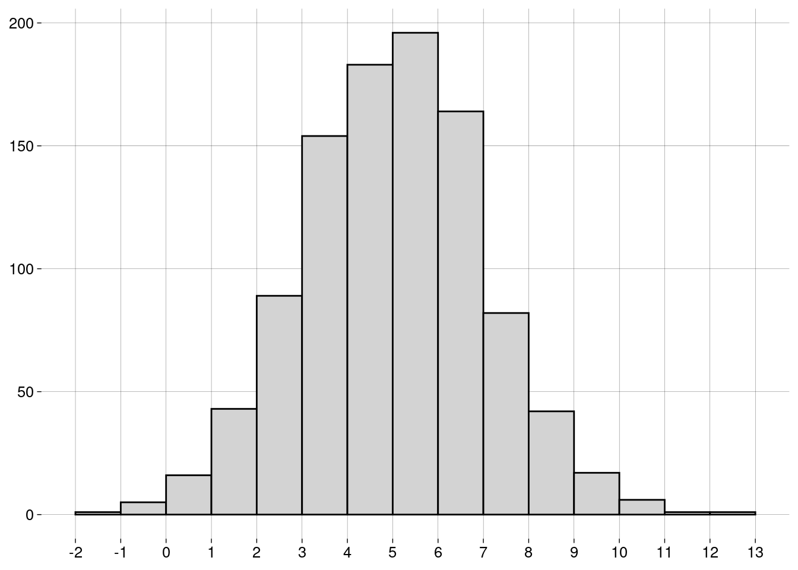
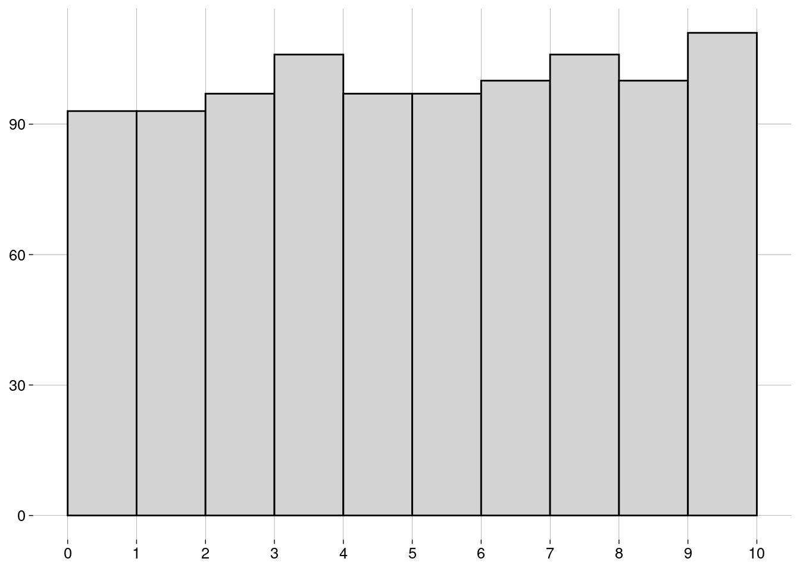
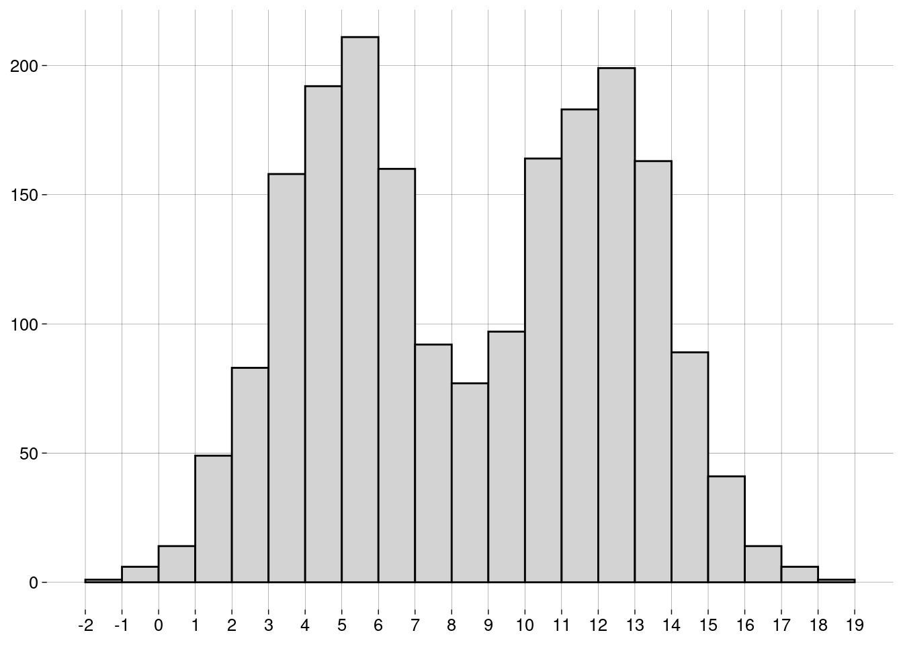
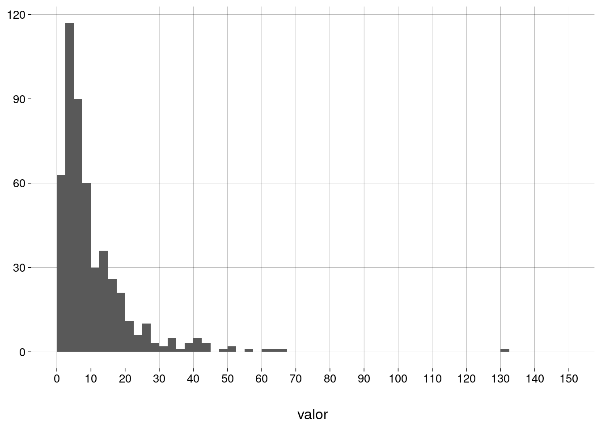
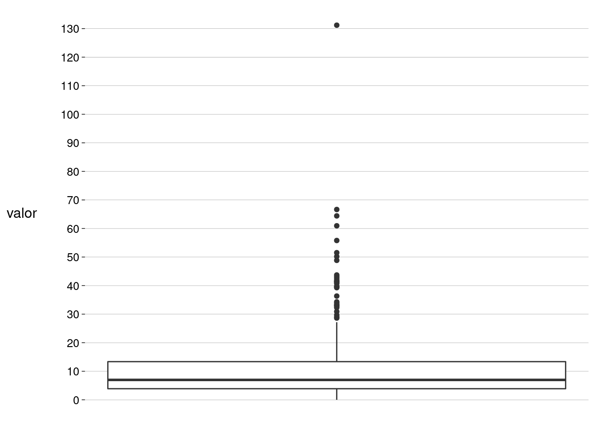
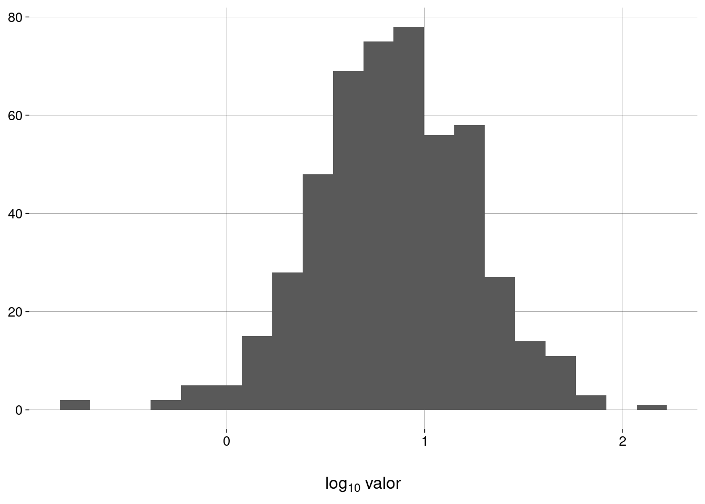
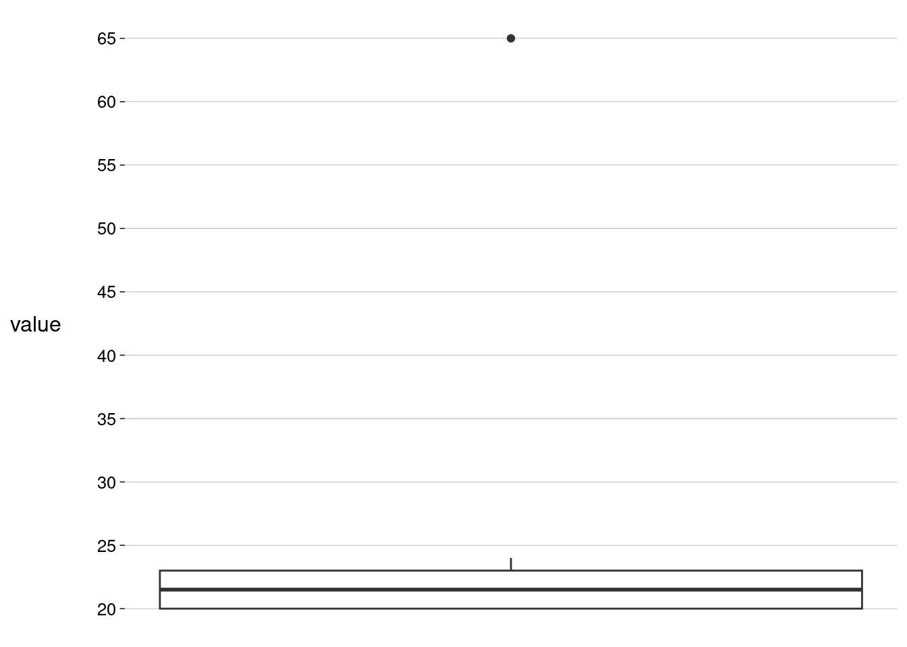

Capítulo 6 Medidas
6.2 Medidas de centralidade
6.2.1 Média
-
A média de uma população é escrita como \(\mu\), e é definida como \[\mu = \frac{\sum_{i=1}^N x_i}{N}\]
\(\sum_{i=1}^N x_i\) é a soma de todos os dados da população.
\(N\) é a quantidade de elementos na população.
-
A média de uma amostra é escrita como \(\bar x\), e é definida como: \[\bar x = \frac{\sum_{i=1}^n x_i}{n}\]
\(\sum_{i=1}^n x_i\) é a soma de todos os dados da amostra.
\(n\) é a quantidade de elementos na amostra.
O cálculo é essencialmente o mesmo. Só mudam os símbolos: \(N\) versus \(n\), e \(\mu\) versus \(\bar x\).
6.2.2 Mediana
Já aprendemos sobre a mediana na seção sobre boxplots.
A idéia é que, depois de ordenar os dados, \(50\%\) dos dados estarão à esquerda da mediana, e \(50\%\) à direita.
A mediana não é tão sensível a outliers quanto à média.
6.2.3 Moda
A moda é o valor mais frequente do conjunto de dados.
Pode haver mais de uma moda.
Não existe uma função para a moda em R base. Por quê?
Por incrível que pareça, é complicado definir a moda de forma a conseguir resultados interessantes.
-
Por exemplo, vamos definir um conjunto de \(1000\) valores numéricos distribuídos normalmente3, com média igual a \(5\) e desvio-padrão4 igual a \(2\):
normal <- rnorm(1000, mean = 5, sd = 2) -
O histograma dos nossos dados é
 -
Vamos calcular a moda com a função
mfv(most frequent value), do pacotemodeest:## Registered S3 method overwritten by 'rmutil': ## method from ## print.response httr# Por causa de um bug na função mfv, # precisamos de números com ponto decimal # (em vez de vírgula): options(OutDec = '.') mfv(normal)## [1] -2.98157689 -0.87490520 -0.00492664 0.06971705 0.19244336 0.19776223 ## [7] 0.21141555 0.25863293 0.35024140 0.42586284 0.48057406 0.49507711 ## [13] 0.52672954 0.53745069 0.59559292 0.65047000 0.65496179 0.68362912 ## [19] 0.69414025 0.82797406 0.83379316 0.88980201 0.91305895 0.93502524 ## [25] 1.05155341 1.10018597 1.11643780 1.12540683 1.18448655 1.18921130 ## [31] 1.25326715 1.25417057 1.30296025 1.34701129 1.36006525 1.41199946 ## [37] 1.44517787 1.44522743 1.45449867 1.48065354 1.50531908 1.54288706 ## [43] 1.55367043 1.55626932 1.60776613 1.61682024 1.64833095 1.67738046 ## [49] 1.70671902 1.74230553 1.79203300 1.79842988 1.80134484 1.86390826 ## [55] 1.88637736 1.89792303 1.91152777 1.91635147 1.95853055 1.99416953 ## [61] 2.00957651 2.01628481 2.01971556 2.04172698 2.07514219 2.10022752 ## [67] 2.10954523 2.12582987 2.14885436 2.14989335 2.16847726 2.17723307 ## [73] 2.18012975 2.21723332 2.22984374 2.26241475 2.27380726 2.27649028 ## [79] 2.28108377 2.28752582 2.30725106 2.30972693 2.33033878 2.33705150 ## [85] 2.34313624 2.34326311 2.34979760 2.35321104 2.36294938 2.38724404 ## [91] 2.39018264 2.39067524 2.39382488 2.39805389 2.41610449 2.42717765 ## [97] 2.42794355 2.45186766 2.46638120 2.46930927 2.48709925 2.48763626 ## [103] 2.51512059 2.55356000 2.55808328 2.56411077 2.56850653 2.57401478 ## [109] 2.57928166 2.58051493 2.58669091 2.59249225 2.59458474 2.60319173 ## [115] 2.62573392 2.63627412 2.64092967 2.64715617 2.68682620 2.71837916 ## [121] 2.74626287 2.75561461 2.76317792 2.76337937 2.77197199 2.78466274 ## [127] 2.78739162 2.80779763 2.81050772 2.81352007 2.82299624 2.82485590 ## [133] 2.83457109 2.84196061 2.84338381 2.86146831 2.86825180 2.87398377 ## [139] 2.87471263 2.90284748 2.90298997 2.90458619 2.90674702 2.90866458 ## [145] 2.91251470 2.93034873 2.93439604 2.94283539 2.94473866 2.95648140 ## [151] 2.97869104 3.00195758 3.00506018 3.01900952 3.03856739 3.04034920 ## [157] 3.04867320 3.06269415 3.06905571 3.07585115 3.07961104 3.08817720 ## [163] 3.09871989 3.10899055 3.11595096 3.13122083 3.14215760 3.15414231 ## [169] 3.16159395 3.17061475 3.18900467 3.19410543 3.19721240 3.20286183 ## [175] 3.20429262 3.20759155 3.23558393 3.24373948 3.24716871 3.24910703 ## [181] 3.24966325 3.26466731 3.26871435 3.28014206 3.28890916 3.29339483 ## [187] 3.29488872 3.30981868 3.32726561 3.33094200 3.34074116 3.34409951 ## [193] 3.35577938 3.37753137 3.37861025 3.41184261 3.42893124 3.43035956 ## [199] 3.43043730 3.43207176 3.43376669 3.44124019 3.44139250 3.44172056 ## [205] 3.44196255 3.44840620 3.46254477 3.47726857 3.48073401 3.49989005 ## [211] 3.52287969 3.52803934 3.53713290 3.53786234 3.54263712 3.54792709 ## [217] 3.54924994 3.55586354 3.55699586 3.56056424 3.56653484 3.58491366 ## [223] 3.58689680 3.58959362 3.59388419 3.60207244 3.60601198 3.61590839 ## [229] 3.63411499 3.64240099 3.64347209 3.64865917 3.66921252 3.67039016 ## [235] 3.67878730 3.69154038 3.71128749 3.71732791 3.72311534 3.72486232 ## [241] 3.72769150 3.73560300 3.74368177 3.74754753 3.76038823 3.76224437 ## [247] 3.76245147 3.77784010 3.78583949 3.78744328 3.80618616 3.81296062 ## [253] 3.81321454 3.81755087 3.82423235 3.83043652 3.83629621 3.84421757 ## [259] 3.84431276 3.86138627 3.86351798 3.87230835 3.87655622 3.88408925 ## [265] 3.88984729 3.90410804 3.90838320 3.91529499 3.91670191 3.92580774 ## [271] 3.93833429 3.94373812 3.94434452 3.94857662 3.96239809 3.97152107 ## [277] 3.97337274 3.97434263 3.97740300 3.98871875 3.99775804 4.01059059 ## [283] 4.01193912 4.01353648 4.01587734 4.02192473 4.03115022 4.03400309 ## [289] 4.03413971 4.03726039 4.04007786 4.04190515 4.04671035 4.04731455 ## [295] 4.04825306 4.06816744 4.06857361 4.07196245 4.08130234 4.08242626 ## [301] 4.11771480 4.11819035 4.11924271 4.12634833 4.13177853 4.13618997 ## [307] 4.15299933 4.15835156 4.16152877 4.16590723 4.16835317 4.18778719 ## [313] 4.20081746 4.21008143 4.21803591 4.22155011 4.22244653 4.23272272 ## [319] 4.23758029 4.24902337 4.25059345 4.25681918 4.25869605 4.26073877 ## [325] 4.26826664 4.27453672 4.27791521 4.27895269 4.28164892 4.28362795 ## [331] 4.30763308 4.31259745 4.31694294 4.31777467 4.31806235 4.32200701 ## [337] 4.32813682 4.33480771 4.33975391 4.34459984 4.34791710 4.35019181 ## [343] 4.35404125 4.36896869 4.37207584 4.37207804 4.37686999 4.38043690 ## [349] 4.38546561 4.39806081 4.39856555 4.39971033 4.40371226 4.40476394 ## [355] 4.40656192 4.40813335 4.40996374 4.41721410 4.43792998 4.44451579 ## [361] 4.44504514 4.44649202 4.44847559 4.45053440 4.45432465 4.45623597 ## [367] 4.46334585 4.46552598 4.46736068 4.46934745 4.47234460 4.47457785 ## [373] 4.47652128 4.47698728 4.47859558 4.47961813 4.47989616 4.48725213 ## [379] 4.49305493 4.49643723 4.49673946 4.50089869 4.50669445 4.51050280 ## [385] 4.51646463 4.52638723 4.52909047 4.56443191 4.57223869 4.58035127 ## [391] 4.58931316 4.59224924 4.59633127 4.60591918 4.61453667 4.61673150 ## [397] 4.62232143 4.62553082 4.64607047 4.65543953 4.65896850 4.66042794 ## [403] 4.66354771 4.66626152 4.67052035 4.67125938 4.67330254 4.68352144 ## [409] 4.68616225 4.69146408 4.69256182 4.69458703 4.69604740 4.71410172 ## [415] 4.71449735 4.72882087 4.73851687 4.73896459 4.74110393 4.74642521 ## [421] 4.76456848 4.77041427 4.77586016 4.78232416 4.78318076 4.78517021 ## [427] 4.78770099 4.78945411 4.79058244 4.79564056 4.80215166 4.80389920 ## [433] 4.81082116 4.81331893 4.81544529 4.81672698 4.82133055 4.82862105 ## [439] 4.82886807 4.83683773 4.84305491 4.85171133 4.85763344 4.85770546 ## [445] 4.85830204 4.85978042 4.86498435 4.87626028 4.87958787 4.88030093 ## [451] 4.88261481 4.88308479 4.88595398 4.89211664 4.89333577 4.89368694 ## [457] 4.89894915 4.90125203 4.90272798 4.90481336 4.91241031 4.92418481 ## [463] 4.92478768 4.92858174 4.92931876 4.92955783 4.93182170 4.95636548 ## [469] 4.97215879 4.97520066 4.97696632 4.98099462 4.98344798 4.99042026 ## [475] 4.99305332 4.99372832 5.00081384 5.00415159 5.00957930 5.02474383 ## [481] 5.03149688 5.03588430 5.03990891 5.04321408 5.04782305 5.05293026 ## [487] 5.07430101 5.07828231 5.08043719 5.08299178 5.08798096 5.08801368 ## [493] 5.08837596 5.09071377 5.09790564 5.09895931 5.11509082 5.12033695 ## [499] 5.12972144 5.13732397 5.14269718 5.15384955 5.15515734 5.15662414 ## [505] 5.16062921 5.16156682 5.16830450 5.16915079 5.17454354 5.17720957 ## [511] 5.17949149 5.18405916 5.18999181 5.19497004 5.19726012 5.19943068 ## [517] 5.20126808 5.20306263 5.20547260 5.20723391 5.20766692 5.21045254 ## [523] 5.21627452 5.21854562 5.22434802 5.22549211 5.22667362 5.23175478 ## [529] 5.23479554 5.24047017 5.24118450 5.24476695 5.24810763 5.26026906 ## [535] 5.26766937 5.27032734 5.27481677 5.27846111 5.27998378 5.29430751 ## [541] 5.29769156 5.30185426 5.30273167 5.30296970 5.30427467 5.34129646 ## [547] 5.34568138 5.34644529 5.34795723 5.35029839 5.35375662 5.35995738 ## [553] 5.36260287 5.36290197 5.36757748 5.37695123 5.38265466 5.38453438 ## [559] 5.38540841 5.38983958 5.39156731 5.39837507 5.40125045 5.40154198 ## [565] 5.40983078 5.41247103 5.41314919 5.41695001 5.41813712 5.42102936 ## [571] 5.42309123 5.42901358 5.43045041 5.43436571 5.44077050 5.44311456 ## [577] 5.44841972 5.45375475 5.45737366 5.45748403 5.46604877 5.46746225 ## [583] 5.48000134 5.48038439 5.48737937 5.49998038 5.51720017 5.52279143 ## [589] 5.52295611 5.52588080 5.53026119 5.53228828 5.53573508 5.53705376 ## [595] 5.53968967 5.54504638 5.54941356 5.55950959 5.55986204 5.56441790 ## [601] 5.56512698 5.56689983 5.56827417 5.56833165 5.56945911 5.56960047 ## [607] 5.57006287 5.57841140 5.58391824 5.59053345 5.59083858 5.59447050 ## [613] 5.59466041 5.59636858 5.60249465 5.60325589 5.61739716 5.61822304 ## [619] 5.62335414 5.62338278 5.62633575 5.63448160 5.63681081 5.63696395 ## [625] 5.66352533 5.67093545 5.67135826 5.67282819 5.67582902 5.67690530 ## [631] 5.67909293 5.69105742 5.69133921 5.70031038 5.70951112 5.71023080 ## [637] 5.72457616 5.72602033 5.73239381 5.73997847 5.74699401 5.74901305 ## [643] 5.75144453 5.75390132 5.75739847 5.76274057 5.77669995 5.80168575 ## [649] 5.80226099 5.80562450 5.82133924 5.82266868 5.83079386 5.83530225 ## [655] 5.83825314 5.83900308 5.83916939 5.85193622 5.85610153 5.86105585 ## [661] 5.86112596 5.86215169 5.87202173 5.87394826 5.87403374 5.87580320 ## [667] 5.88746773 5.88801456 5.90589742 5.90767081 5.91828177 5.92304322 ## [673] 5.92723680 5.93960230 5.94062061 5.94769528 5.94835811 5.96111679 ## [679] 5.96638717 5.97203045 5.97253846 5.98514450 5.99184323 5.99386562 ## [685] 5.99986893 6.00698221 6.00766530 6.01555317 6.01770435 6.02349405 ## [691] 6.02393161 6.02527960 6.03156001 6.04320060 6.04359397 6.05255854 ## [697] 6.05344271 6.06929090 6.07551251 6.07678315 6.09330062 6.09979554 ## [703] 6.10030678 6.11253956 6.11829877 6.13117767 6.14378349 6.14942111 ## [709] 6.15479749 6.15514783 6.16473870 6.17706671 6.18841407 6.19149005 ## [715] 6.19381353 6.22815662 6.22824562 6.23971835 6.26820831 6.26921009 ## [721] 6.26956298 6.27267938 6.28492336 6.29373288 6.29374223 6.29975511 ## [727] 6.30013257 6.30037997 6.30653140 6.30704801 6.31185163 6.32044914 ## [733] 6.32352758 6.32429576 6.33697325 6.33758052 6.33873140 6.34759530 ## [739] 6.35180860 6.36088528 6.36744544 6.36828116 6.36863533 6.36883624 ## [745] 6.37941976 6.40413672 6.42226177 6.42325934 6.42832115 6.45619077 ## [751] 6.46219439 6.46327154 6.48030041 6.48343507 6.48782741 6.48977059 ## [757] 6.49731148 6.50305171 6.50570552 6.50945342 6.51058743 6.51338988 ## [763] 6.51660206 6.51885714 6.54136940 6.57052472 6.58763035 6.60809619 ## [769] 6.61196290 6.61360823 6.61778130 6.61834917 6.62179833 6.62379813 ## [775] 6.63022529 6.63533647 6.64065467 6.64172522 6.64625793 6.64732403 ## [781] 6.65090919 6.65726174 6.66178286 6.66965179 6.67689424 6.67813503 ## [787] 6.67954709 6.69117350 6.69145380 6.69568919 6.69640675 6.71647681 ## [793] 6.72713691 6.73611709 6.76071239 6.76148341 6.77108372 6.80214668 ## [799] 6.80361154 6.81008180 6.81650396 6.81720138 6.81967823 6.82041274 ## [805] 6.82217585 6.83701721 6.84019195 6.84232929 6.85010468 6.85770673 ## [811] 6.86977584 6.87933376 6.88750094 6.88830433 6.91082799 6.91087448 ## [817] 6.92943239 6.92956987 6.93460812 6.93634798 6.94279956 6.94501186 ## [823] 6.95434046 6.96095007 6.96336937 6.96373587 6.96527608 7.00425552 ## [829] 7.01479911 7.01525393 7.03801288 7.04222084 7.04691954 7.05828014 ## [835] 7.06973759 7.07008247 7.07322907 7.08866191 7.09044915 7.09225937 ## [841] 7.09457580 7.09855319 7.10233795 7.11048708 7.11049381 7.11144047 ## [847] 7.12613844 7.13087252 7.13432971 7.13633662 7.14329281 7.14856388 ## [853] 7.15315620 7.15367214 7.16413752 7.16652451 7.17950093 7.17957536 ## [859] 7.19699425 7.20558647 7.20969788 7.22602448 7.24475987 7.24582232 ## [865] 7.24597091 7.25880515 7.26115758 7.26442960 7.26660277 7.26683907 ## [871] 7.26715533 7.27617735 7.28482504 7.29117042 7.30085933 7.31793437 ## [877] 7.32254258 7.32317250 7.34586827 7.35903263 7.35985171 7.36171348 ## [883] 7.36304683 7.41193078 7.41394529 7.41420517 7.41489056 7.41722701 ## [889] 7.41856854 7.42067992 7.43514240 7.44341234 7.45850451 7.49771556 ## [895] 7.50254441 7.54912665 7.54968890 7.55195744 7.55414459 7.55587045 ## [901] 7.56558757 7.56614493 7.57410332 7.57608891 7.57787563 7.60383114 ## [907] 7.61672877 7.61995488 7.62334368 7.63265387 7.64749558 7.65518901 ## [913] 7.65873007 7.66020121 7.67489610 7.67626158 7.68741188 7.73040012 ## [919] 7.74692379 7.76356028 7.77932369 7.80745909 7.81139847 7.82328783 ## [925] 7.86002005 7.87874394 7.89590685 7.90072870 7.90179065 7.90415302 ## [931] 7.91693685 7.94270734 7.94787740 7.97857030 8.01106359 8.01479508 ## [937] 8.01518957 8.03717061 8.03905820 8.06145586 8.06513896 8.07075329 ## [943] 8.07258692 8.13496127 8.13846922 8.14467865 8.15571996 8.15955161 ## [949] 8.15961629 8.20828410 8.23319289 8.23337257 8.25972456 8.26317337 ## [955] 8.28011672 8.28989614 8.29689145 8.39405525 8.42200740 8.42656931 ## [961] 8.44891900 8.47728294 8.48886473 8.49549179 8.50587934 8.54314512 ## [967] 8.55801678 8.56140404 8.62795922 8.63671561 8.63714204 8.64680422 ## [973] 8.66526721 8.72278547 8.72449092 8.76939114 8.79714487 8.81307129 ## [979] 8.86716742 8.88438460 8.88914364 8.89095884 8.90696663 8.90783210 ## [985] 8.96239685 9.05588314 9.06103496 9.06892284 9.23683764 9.50357180 ## [991] 9.58130120 9.63313614 9.67762219 9.72475915 9.79696914 10.01035341 ## [997] 10.27203228 10.62330098 11.19909322 11.76936146# Voltamos para a vírgula como separador decimal: options(OutDec = ',') O que houve?!
O problema é que não há valores repetidos no conjunto de dados! Por isso, todos os \(1000\) valores são modais.
-
Uma maneira de evitar isto é definir a moda como o centro do intervalo mais curto que contém metade dos dados. Usamos a função
mlv(most likely value):moda <- mlv(normal, method = 'venter') moda## [1] 5,064612 -
Esta moda estimada pode nem estar no conjunto de dados:
moda %in% normal## [1] FALSE Mas o resultado de
mlv()é útil, pois nos diz que, embora não haja valores repetidos, valores próximos de \(5\) são mais frequentes, como mostra o histograma.
6.2.3.1 Exercícios
-
Arrendonde os valores no vetor
normalpara \(2\) casas decimais e ache a(s) moda(s)com a função
mfv, ecom a função
mlv, usando o métodoventer.
Considerando o histograma, qual das respostas você prefere? Por quê?
6.3 Formas de uma distribuição
- A forma do histograma mostra aspectos importantes da distribuição dos dados.
6.3.1 Distribuição Uniforme
-
Se o histograma tem todas as barras aproximadamente da mesma altura, dizemos que a distribuição é uniforme:
 A distribuição uniforme não tem moda, já que todos os valores têm aproximadamente a mesma frequência.
6.3.2 Simetria
Se o histograma for simétrico (i.e., os lados esquerdo e direito são “espelhados”), dizemos que a distribuição é simétrica.
A distribuição normal do exemplo acima é simétrica.
A distribuição uniforme também é simétrica.
-
Para distribuições simétricas, a média, a mediana e a moda (quando existe e é única) são bem próximas.
-
Uma distribuição pode ser simétrica, mas ter duas (ou mais) modas diferentes:
 Algumas distribuições não são simétricas, mas têm uma cauda longa à esquerda ou à direita.
Dependendo da cauda, as distribuições são chamadas de assimétricas à esquerda ou assimétricas à direita.
-
Um exemplo: receitas anuais (em milhões de dólares) de CEOs de grandes empresas:
df <- read_csv( './data/CEO_Salary_2012.csv', show_col_types = FALSE ) glimpse(df)## Rows: 500 ## Columns: 9 ## $ Rank <dbl> 1, 2, 3, 4, 5, 6, 7, 8, 9, 10, 11, 12, 13, 14, 15, 16… ## $ Name <chr> "John H Hammergren", "Ralph Lauren", "Michael D Fasci… ## $ Company <chr> "McKesson", "Ralph Lauren", "Vornado Realty", "Kinder… ## $ `1-Year Pay ($mil)` <dbl> 131,190, 66,650, 64,405, 60,940, 55,790, 51,525, 50,1… ## $ `5 Year Pay ($mil)` <dbl> 285,020, 204,060, NA, 60,940, 96,110, 100,210, 90,300… ## $ `Shares Owned ($mil)` <dbl> 51,9, 5010,4, 171,7, 8582,3, 21,5, 47,3, 128,2, 155,8… ## $ Age <dbl> 53, 72, 55, 67, 59, 57, 55, 59, 61, 60, 59, 56, 63, 5… ## $ Efficiency <dbl> 121, 84, NA, NA, 138, 36, 12, NA, 91, 131, 150, NA, 1… ## $ `Log Pay` <dbl> 8,117901, 7,823800, 7,808920, 7,784902, 7,746556, 7,7… -
Vamos usar apenas os nomes e os valores anuais:
salarios <- df %>% select(Name, valor = `1-Year Pay ($mil)`) -
Um histograma:
salarios %>% ggplot(aes(x = valor)) + geom_histogram(breaks = seq(0, 150, 2.5)) + scale_x_continuous(breaks = seq(0, 150, 10)) + labs(y = NULL) É uma distribuição assimétrica à direita: a maior parte dos CEOs têm receitas anuais “baixas”, de menos de \(10\) milhões. À medida que examinamos valores maiores, a quantidade de CEOs vai diminuindo lentamente.
Observe que a longa cauda à direita “puxa” a média para um valor mais alto do que a mediana.
-
A moda, que corresponde à barra mais alta do histograma, é menor que a mediana (e que a média):
sumario <- salarios %>% summarise( moda = mlv(valor, method = 'venter'), mediana = median(valor), media = mean(valor) ) sumario -
Em um boxplot, também é possível detectar a assimetria pela grande quantidade de outliers em um extremo:
salarios %>% ggplot(aes(y = valor)) + geom_boxplot() + scale_x_continuous(breaks = NULL) + scale_y_continuous(breaks = seq(0, 150, 10)) Com distribuições assimétricas à esquerda, a situação se inverte: a média é menor que a mediana, que é menor que a moda.
6.4 Re-expressão
Muitas vezes, é recomendável transformar a escala dos dados para que uma distribuição assimétrica se torne simétrica.
-
No exemplo das receitas dos CEOs, podemos tomar os logaritmos dos valores, em vez dos valores:
salarios_log %>% ggplot(aes(x = log_valor)) + geom_histogram(bins = 20) + labs( x = TeX('$\\log_{10}$ valor'), y = NULL )## Warning: Removed 3 rows containing non-finite values (stat_bin). O logaritmo de um número na base \(10\) é, essencialmente, a quantidade de dígitos do número, vista como uma grandeza contínua.
Logaritmos negativos vêm de valores entre \(0\) e \(1\).
Logaritmo zero vem do valor \(1\).
Valores iguais ou menores que zero não têm logaritmo definido.
-
Por isso a mensagem de aviso sobre \(3\) valores removidos. São valores iguais a zero:
Uma vantagem desta escala logarítmica é que podemos entender melhor o histograma. Os dados não estão amontoados de um lado só.
6.5 Medidas de posição
6.5.1 Quantis
Na seção sobre boxplots, falamos sobre quantis, que são medidas de posição.
-
Em R, a função
quantilecalcula quantis de um vetor:## 0% 25% 50% 75% 100% ## 0,00000 3,88500 6,96750 13,36125 131,19000 -
Você pode passar frações entre \(0\) e \(1\) para
quantile. Por exemplo, para calcular o primeiro, o quinto, e o décimo percentis5 das receitas dos CEOs:## 1% 5% 10% ## 0,48695 1,48405 2,19400
6.6 Medidas de dispersão
Tão importantes quanto as medidas de centralidade são as medidas de dispersão (ou espalhamento).
Elas informam o quanto os dados variam.
6.6.1 Amplitude
Uma medida simples é a diferença entre o valor máximo e o valor mínimo.
-
Lembrando do nosso exemplo das idades dos alunos:
idades## [1] 20 20 20 20 20 20 21 21 21 21 22 22 22 23 23 23 23 24 24 65 -
A função
rangeretorna o mínimo e o máximo:range(idades)## [1] 20 65 -
A amplitude destes dados é, então
## [1] 45 A diferença de idade entre o aluno mais novo e o mais velho é de \(45\) anos, um valor alto, por causa do velhinho.
6.6.2 IQR
Na seção sobre boxplots, também falamos sobre o intervalo interquartil (IQR).
-
No boxplot, é a altura da caixa. Para as idades dos alunos:
idades %>% as_tibble() %>% ggplot(aes(y = value)) + geom_boxplot() + scale_x_continuous(breaks = NULL) + scale_y_continuous(breaks = seq(20, 70, 5)) -
O IQR é a diferença entre o primeiro e o terceiro quartis:
summary(idades)## Min. 1st Qu. Median Mean 3rd Qu. Max. ## 20,00 20,00 21,50 23,75 23,00 65,00## [1] 3IQR(idades)## [1] 3 Ou seja, os \(50\%\) centrais dos alunos têm idade entre \(20\) e \(23\) anos, um IQR de \(3\).
É uma variação pequena, porém mais fiel à realidade do que a amplitude, que é alta por causa do velhinho.
Quanto maior o IQR, mais espalhados estão os dados.
6.6.3 Variância
-
Agora, vamos trabalhar com os pesos (kg) e alturas (m) de um time de basquete:
medidas <- tibble( altura = .025 * c(72, 74, 68, 76, 74, 69, 72, 79, 70, 69, 77, 73), peso = 0.45 * c(180, 168, 225, 201, 189, 192, 197, 162, 174, 171, 185, 210) ) medidassummary(medidas$altura)## Min. 1st Qu. Median Mean 3rd Qu. Max. ## 1,700 1,744 1,812 1,819 1,863 1,975summary(medidas$peso)## Min. 1st Qu. Median Mean 3rd Qu. Max. ## 72,90 77,96 84,15 84,53 89,10 101,25 A variância é a maneira mais usada de medir o espalhamento em torno da média.
Para calcular a variância das alturas e a variância dos pesos, precisamos calcular valores intermediários.
-
O desvio de um valor é a diferença entre o valor e a média. O desvio pode ser positivo ou negativo.
d_medidas <- medidas %>% mutate( d_altura = altura - mean(altura), d_peso = peso - mean(peso) ) d_medidas -
Vamos calcular o desvio médio das alturas e o desvio médio dos pesos:
Não foi uma boa idéia. O desvio médio sempre é igual a zero.6 (O R pode mostrar algum valor diferente de zero por causa da precisão limitada dos números de ponto flutuante.)
-
Como resolver isto? Elevando os desvios ao quadrado:
dq_medidas <- d_medidas %>% mutate( dq_altura = d_altura^2, dq_peso = d_peso^2 ) dq_medidas Agora temos os desvios quadrados, que são todos positivos.
-
O desvio quadrado médio vai ser a variância:
Uma vantagem da variância é que outliers (que têm desvios quadrados maiores) contribuem mais do que elementos próximos à média (que têm desvios quadrados menores).
Uma desvantagem da variância é que a sua unidade é o quadrado da unidade dos valores.
Neste exemplo, as unidades são \(m^2\) e \(kg^2\)!
6.6.4 Desvio-padrão
É melhor trabalhar com a raiz quadrada da variância, que chamamos de desvio-padrão.
-
As unidades são as mesmas que as unidades dos dados.
-
Claro que o R tem funções para calcular isso:
varesd(standard deviation):medidas %>% summarize( altura_var = var(altura), altura_dp = sd(altura), peso_var = var(peso), peso_dp = sd(peso) ) Mas os valores são diferentes dos que calculamos. Por quê?
6.6.5 Definições
-
Para uma população com \(N\) elementos e média \(\mu\), a variância é
\[ \sigma^2 = \frac{\sum_{i=1}^N (x_i - \mu)^2}{N} \]
e o desvio-padrão é
\[ \sigma = \sqrt{\frac{\sum_{i=1}^N (x_i - \mu)^2}{N}} \]
-
Para uma amostra com \(n\) elementos e média \(\bar x\), a variância é
\[ s^2 = \frac{\sum_{i=1}^n (x_i - \bar x)^2}{n-1} \]
e o desvio-padrão é
\[ s = \sqrt{\frac{\sum_{i=1}^n (x_i - \bar x)^2}{n -1}} \]
Nós calculamos a versão populacional destas medidas.
R calcula a versão amostral destas medidas.
Reveja os cálculos e entenda a diferença.
Note, também, que as medidas populacionais são representadas por letras gregas — \(\mu\), \(\sigma^2\), \(\sigma\) —, enquanto as medidas amostrais são representadas por letras latinas — \(\bar x\), \(s^2\), \(s\).
Mais adiante no curso, você vai entender por que o denominador da variância amostral é \(n - 1\), em vez de \(n\).
Nada é por acaso, nem mesmo em Estatística.
6.6.6 Exercícios
Quando a variância e o desvio-padrão de um conjunto de dados são iguais a zero?
-
Mostre que o desvio médio de qualquer conjunto de valores é igual a zero.
Ou seja, considere o conjunto
\[ \{x_1, x_2, \ldots, x_n\} \]
e prove que
\[ \sum_{i = 1}^n (x_i - \bar x) = 0 \]
Manipule apenas as variáveis \(x_i\). Não use exemplos, pois eles não provam o enunciado geral.
Dica: lembre que \(\displaystyle \bar x = \frac{\sum_{i = 1}^n x_i}{n}\).
6.7 Coeficiente de variação
Em um conjunto de dados, o desvio-padrão é uma medida importante da variação dos dados.
Mas a unidade do desvio-padrão muda de um conjunto de dados para outro: alturas em metros, pesos em quilos etc.
Podemos eliminar as unidades expressando o desvio-padrão em termos da média.
O resultado é a fração \(\frac{\sigma}{\mu}\) (na população) ou \(\frac{s}{\bar x}\) na amostra.
Esta fração é o coeficiente de variação (CV).
O CV não tem unidades.
-
Para as alturas do exemplo dos jogadores de basquete:
A média das alturas é \(1{,}82\) metros.
O desvio-padrão das alturas é \(0{,}09\) metros.
O CV é aproximadamente \(0{,}0473\).
statip::cv(medidas$altura)## [1] 0,04729982Em outras palavras, para as alturas, um desvio-padrão corresponde a \(4{,}73\%\) da média.
-
Para os pesos:
A média dos pesos é \(84{,}53\) quilos.
O desvio-padrão dos pesos é \(8{,}31\) quilos.
O CV é aproximadamente \(0{,}0983\).
statip::cv(medidas$peso)## [1] 0,09834649Em outras palavras, para os pesos, um desvio-padrão corresponde a \(9{,}83\%\) da média.
Segundo estes valores, a variação dos pesos é cerca de \(2\) vezes maior do que a variação das alturas.
O coeficiente de variação sempre faz sentido para dados do nível racional (veja a definição) — i.e., dados onde o zero é absoluto.
Para dados apenas intervalares, o uso do CV pode levar a conclusões absurdas, como você terá chance de ver no exercício.
6.7.1 Exercícios
-
Considere o seguinte conjunto de temperaturas (em graus Celsius):
celsius <- c(0, 10, 20, 30, 40) -
E as mesmas temperaturas (em graus Fahrenheit):
fahrenheit <- 9 * celsius / 5 + 32 -
Calcule para cada um dos dois vetores acima:
A média,
O desvio-padrão,
O coeficiente de variação.
As temperaturas são as mesmas (apenas em unidades diferentes), mas os CVs são diferentes. Por quê?
-
Agora, convertemos as mesmas temperaturas para a escala Kelvin:
kelvin <- celsius + 273.15 -
E para a escala Rankine:
rankine <- fahrenheit + 459.67 -
Calcule para cada um dos dois vetores acima:
A média,
O desvio-padrão,
O coeficiente de variação.
-
Compare:
As médias de
celsiusekelvin,As médias de
fahrenheiterankine,Os desvios-padrão de
celsiusekelvin,Os desvios-padrão de
fahrenheiterankine,Os coeficientes de variação de
kelvinerankine.
Explique o que houve.
6.8 Escores-padrão
Para qualquer conjunto de dados, a unidade usada é uma escolha arbitrária.
Para alturas, por exemplo, podemos usar metros, centímetros, pés, polegadas etc.
A escolha de unidades é tão arbitrária que podemos escolher uma unidade (que dificilmente vai ter nome) que faça com que a média do conjunto de dados seja zero e que o desvio-padrão seja igual a \(1\).
Isto equivale a tomar, como unidade, o desvio-padrão acima da média.
Os valores, nesta nova unidade, são chamados de escores-padrão.
Dizemos que os valores foram padronizados.
Vamos usar as alturas dos jogadores de basquete.
-
Para fazer a altura média virar zero, basta subtrair, de cada altura, a altura média:
alturas <- medidas$altura mean(alturas)## [1] 1,81875## [1] 0 -
Para fazer o desvio-padrão ser igual a \(1\), basta dividir estes valores pelo desvio-padrão dos dados originais:
sd(alturas)## [1] 0,08602656## [1] 1 -
Tome, por exemplo, o seguinte jogador:
altura <- alturas[1] altura## [1] 1,8## [1] -0,217956Faça as contas: o valor da altura padronizada deste jogador significa que a altura dele está \(0{,}217956\) desvios-padrão abaixo da altura média.
-
No geral:
Se a média for \(\bar x\), e
Se o desvio-padrão for \(s\),
Os escores-padrão \(z_i\) vão ser \[ z_i = \frac{x_i - \bar x}{s} \]
-
Em R, a função
scalefaz isso:medidas <- medidas %>% mutate(altura_padronizada = scale(altura)[,1]) medidas %>% select(altura, altura_padronizada)mean(medidas$altura_padronizada)## [1] -0,000000000000000004610683sd(medidas$altura_padronizada)## [1] 1 A função
scalefoi feita para receber e retornar matrizes. Como estamos trabalhando com vetores, usamosscale(altura)[,1]para tomar apenas a primeira (e única) coluna do resultado.
6.8.1 Exercícios
Por que, quando calculamos as alturas deslocadas divididas pelo desvio-padrão das alturas, temos certeza de que a média dos valores resultantes não mudou?
Padronize os pesos dos jogadores de basquete.
Confira a média e o desvio-padrão dos pesos padronizados.
Crie um scatterplot de peso por altura.
Crie um scatterplot de peso padronizado por altura padronizada.
Compare os dois scatterplots. O que muda de um para outro?
6.9 Teorema de Tchebychev
Grosso modo, quanto mais alto o desvio-padrão, maior é a distância da média até os valores.
Ou seja, quanto menor o desvio-padrão, maior é a proporção de valores que estão próximos à média.
-
O teorema de Tchebychev quantifica esta idéia:
Em qualquer distribuição, a proporção de valores dentro de \(\pm k\) desvios-padrão \((k > 1)\) da média é de, no mínimo \[ 1 - \frac{1}{k^2} \]
6.9.1 Exemplo
-
Lembre-se do conjunto de dados sobre os totais de horas de sono de diversos mamíferos:

-
Média e desvio-padrão:
media <- mean(df$value) media## [1] 10,43373dp <- sd(df$value) dp## [1] 4,450357 -
Qual a proporção de espécies que estão a \(1{,}3\) ou menos desvios-padrão de distância da média?
k <- 1.3 inicio <- media - k * dp inicio## [1] 4,648271fim <- media + k * dp fim## [1] 16,2192 -
O teorema diz que no mínimo a seguinte proporção das espécies está dentro deste intervalo:
proporcao_teorema <- 1 - 1 / k^2 proporcao_teorema## [1] 0,408284 -
Graficamente:

-
Vamos conferir:
## [1] 83## [1] 64proporcao_real <- especies_intervalo / total_especies proporcao_real## [1] 0,7710843 Como o teorema usa apenas a média e o desvio-padrão, e mais nenhuma informação sobre a distribuição dos valores — forma, simetria etc. — o que ele garante é, muitas vezes, mais fraco do que a realidade.
Neste exemplo, o teorema garantia no mínimo \(40{,}83\%\) das espécies a \(1{,}30\) ou menos desvios-padrão de distância da média.
A proporção verdadeira é \(77{,}11\%\) das espécies.
O teorema está certo (claro), mas, sem mais informações sobre a distribuição dos dados, o teorema não pode ser mais preciso.